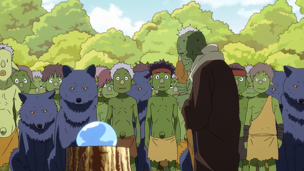

Rimuru Tempest and Robinson Crusoe: How to Build a Civilization
Ever thought about how Robinson Crusoe compares to anime?
This article explores how Rimuru Tempest from That Time I Got Reincarnated as a Slime mirrors Crusoe's journey of survival and building a civilization.
It's a fun read about resourcefulness, leadership, and turning nothing into something amazing!
!
I remember reading The Swiss Family Robinson over and over when I was little.
Washed ashore in a strange land, marooned away from everything comfortable and familiar, a family must learn to thrive in their new unfamiliar home.
Unlike the post-disaster tales saturating our contemporary mediascape, where people must do drastic things to survive savage environs, The Swiss Family Robinson is a story where the land is not altogether hostile, and the characters are optimistic about their future, acting more cooperative than territorial and more curious than fearful.
The book begins in fair weather with enough food to get by, so our protagonists begin exploring.
In this world, they are allowed to marvel, and in That Time I Got Reincarnated as a Slime, readers are invited to do the same.
So The Swiss Family Robinson isn't too different from Time I Got Reincarnated as a Slime (henceforth Slime Isekai because the official title is a mouthful) at heart.
Deadly disaster strikes a modern-day Japanese salaryman, reincarnating him into a strange land as a powerful slime.
Finding himself relatively well off in his new body, the slime monster later named Rimuru Tempest decides to sate his curiosity and explore.
He finds other monsters with sentience like himself, living in fear and tatters.
Like his last name suggests, the changes he brings about for them are as paradigm-shifting as the eponymous Shakespearean storm.
He builds a nation of monsters by introducing his ideas about civilization in this anime Robinsonade.
The Swiss Family Robinson and the Slime Isekai are offshoots of the romantic "Robinsonades," a genre of fiction based around the original Robinson Crusoe story.
Robinson Crusoe is the adventure of the eponymous hero, who gets marooned in a strange land and thrust into an uncertain situation.
But he not only survives his initial misfortunes, he thrives in his surroundings and makes them into his home-away-from-home.
The descriptions of exotic phenomena in his account are exciting to imagine, and the challenges that his discoveries pose invite the reader to cleverly solve the puzzles ahead.
This describes the appeal of swords-and-sorcery fantasy worlds just as well as the more conventional Robinsonade settings.
And yet, for as charming as Robinsonades can be, these narratives carry baggage that not even the Slime Isekai anime has managed to move past.
So what is a "civilization" really, and how does Slime Isekai recreate our ideas of civilization, good and bad?
What's in a Name?
Slime Isekai has several memorable moments, and the first at the beginning comes when our protagonist slime makes friends with a towering but lonely dragon.
After the curious Rimuru makes it out his starting area, he runs into diminutive and frightened goblins.
They speak like him and plead for mercy.
Promising them no harm, he is guided to their small village.
He agrees to help the goblins defend their home against direwolves, and so defeats their leader.
When the direwolves submit, they find themselves shoulder-to-shoulder with their former goblin foes.
Both monster races look to Rimuru with great expectations.
Finding himself unable to leave them be, he takes both groups under his wing and tells them to live with each other from now on.
Throughout this odd saga, he makes a discovery: goblins and direwolves don't have names.
All monsters lack names unless given by someone who already possesses a name.
Unbeknownst to Rimuru at the time, names have a mana cost in this world, and most monsters can tell each other apart without them.
But in Rimuru's previous life, everyone had names by default, and nothing about these monsters suggests they don't deserve the same courtesy.
So Rimuru names as many of them as he can before passing out from mana loss.

So what is in a name?
Delighted to have found a friend despite his attempts at being intimidating, the dragon and the slime offer each other names.
Veldora the dragon is rechristened Veldora Tempest, and the salaryman-turned-slime is rebranded Rimuru Tempest.
Fitting of their last names, the encounter between these two sets the dramatic events of the anime in motion.
Before the encounter concludes, the rechristened Veldora Tempest drops his hot-and-cold tsundere act and declares that he and this slime are equals.
Names don't just carry the function of telling different people apart; they also function to further define individuals, in terms of the civilization idealized by the progressive philosophies of the Enlightenment Era.
Names do not define everything about a person, but they make it more difficult to overgeneralize and discriminate based on other factors about them.
They make it harder to claim this goblin or that direwolf are mere monsters to hate or fear.
More than just being practically useful, to have a name carries an implication of dignity, respect, and worth, especially in a world where having a name is optional and typically reserved for human races.
Our protagonist is no longer just a slime monster.
He is Rimuru Tempest, friend of Veldora and many other races of monsters.
The goblins are no longer random monsters, but Rigur, Rigurd, Gobta, and many others.
To drive the metaphor home mechanically, monsters given names also have their inner potential unlocked by the name-giver's mana.
When Rimuru awakes from his coma, he finds himself surrounded by burly and shapely hobgoblins and enormously powerful direwolves.
The worth in their newfound strength as workers and fighters is connected to the worth recognized by Rimuru in his act of name-giving.
They pledge their loyalties and services to Rimuru, not only out of thankfulness for new physiques and abilities; they follow him because he saw value in all of them and recognized that value at the cost of his own strength.
For the chaotic and tyrannical demon lords, name-giving does not necessarily suggest worth or equality.
For people who only care about their own ambitions, names are but a means to an end, an indication of some base level of power instead of an indicator of personal dignity.
The orc-branded Geld is named for no other reason than to be chaotic utility for a Demon Lord.
"Geld" isn't exactly a respectable name to call someone by, but it is a name that more easily strikes fear in adversaries.
The lizardman Gabiru is named for no other reason than to serve as a Demon Lord's chaotic utility.
"Gabiru" might think himself special because he was given a name, but the gift is revealed to only be a ruse to divide the lizardmen for easier conquest.
The girl named Shizue Izawa is rebranded "Shizu" by a name-giving Demon Lord, but he does not give her this name out of any personal affection—he just does it because the new name is easier to say.
He uses her as a tool like all the rest, stripping her of her agency and numbing her with dehumanizing acts.
On her deathbed, she shares her wish with Rimuru to be known—to be remembered not as "Shizu," the unhappy discarded tool of someone else, but as "Shizue Izawa," the name that affirms her existence as a person of worth.
For the monsters of this world looking up to Rimuru, the concept of giving away names with no strings attached is revolutionary to them.
It is tempestuous.
A Nation of Many Races
Accepting the leadership role offered to him, Rimuru begins remaking the little village into the kind of society drawn from his own values, which relies on his experiences as a Japanese salaryman navigating a heavily consensus-based business culture.
Slime Isekai re-imagines the old Tolkien-esque fantasy model of goblin wolf riders into the basis of a uniquely multicultural nation.
He orders his goblin and direwolf followers to bury their figurative hatchets and live together.
Rimuru invites dwarven and ogre advisers to live and work with him.
The dwarves offer their skills and teach the goblins their Western-fantasy-based knowledge in building, textiles, and forging.
The ogres instruct the goblins in their more Eastern-fantasy-based knowledge of similar disciplines.
Rimuru draws orcs into his society instead of punishing them for their war of aggression, offering them food and even names in exchange for labor.
He allows an exiled human researcher to set up shop in his town and permits his military lieutenants to train allied lizardmen.
Through his efforts to quickly develop his new nation into a self-sufficient polity with decent living standards, he ushers his little village of goblins not only into a more technologically advanced society, but an east-meets-west melting-pot the likes of which viewers can observe in the real-life cosmopolitan worlds of New York City, Singapore, or Tokyo.
Civilization can be understood both in terms of modernizing infrastructure and Enlightenment ideology.
The advisers that Rimuru courted from the more technologically advanced dwarven kingdom improve the living standards of his nation to something a little closer to the material standards of modern Japan.
The name-giving spree that he went on and the different races of people he invited brings his nation closer to the values of the cosmopolitan-based Enlightenment.
Those ideas have diffused outwards, influencing and impressing others into forming associations and alliances based around common values in addition to mutual protection, like the Jura Tempest Federation and the Alliance between Rimuru Tempest and the Dwarven King.
Under his regime of multicultural development and international cooperation, Rimuru has ushered in the beginnings of a world order defined by cooperation to solve disputes instead of competition to settle them.
Civilization and its Discontents
From everything that's been described so far, civilization certainly seems like a good thing.
Its less noble side starts to come through when civilizations suggest how people should look and behave in ways that have nothing to do with benefiting others at large, but consolidating power for a few.
It starts becoming a problem when the “civilized” see every aspect of their way of life as superior to their “less civilized” peers.
At its darkest, “civilization” can be seen solely as a label for cultural superiority.
This questionable subtext is likely unintentional on the anime's part, but it bears pointing out that when Slime Isekai Rimuru gives the surviving ogres their names, their appearances transform from something less "monstrous" into something more "human".
The subtext is that the "monstrous" face is being conflated with a "less civilized" image.
Robinson Crusoe has a controversial reputation that its Robinsonade spin-offs have since had the challenge of addressing.
The Robinson Crusoe character saves a native "savage" at one point in his adventures.
He is repulsed by the native's culture of cannibalism, but he takes pity on a native about to be eaten.
He regards him as a child who doesn't know any better and thus resolves to "enlighten" him and take him under his wing.
He christens him with a new name, anoints him in his faith, and makes him his servant.
The Robinson Crusoe archetype is the poster child for the historical benevolent rationalization given for why “civilized” imperiums like Britain, America, and even Japan should maintain colonial possessions in the face of anti-imperialist criticism and self-determinist protest.
Their "subjects" would devolve into savagery, disorder, and weakness without them.
It provides cover for the exploitation that empires exact on their colonial possessions, and far from promoting the notion of equality between persons under civilization, it assumes one party is inferior and must be ruled by the other for their own benefit.
There are infinite internet arguments to be had over which ogre designs in Slime Isekai look better.
(I think the old ones look better myself).
The goblin redesigns make more practical sense in that they look physically stronger and healthier.
Sure, it's a common enough anime trope for warriors to have smaller and sleeker profiles in their final forms, but is there anything more advantageous for them about looking less monstrous and more human?
Or is it an arbitrary change that unfortunately runs up against the historical baggage of imperialism?
The spread of civilization has both its benefits and its baggage.
Connecting the idealistic benefits of a name with looking more human—in some cases, more lighter-skinned—invokes the pained memory of imperialism.
The Swiss Family Robinson gets by this obstacle by not including natives in its new world to begin with, but Slime Isekai does meet natives on its voyage, scratching its hull under the surface as it quietly pulls past the rocks in its voyage to tell a story of benevolence.
As with many Robinsonades, Slime Isekai doesn't emerge fully unscathed from the sins of its troubled lineage.
Despite these troubles, it remains a fascinating show.
It's full of passionately animated fights and consistently good character writing.
The story's world-building is also full of engrossing charm and mysteries that I want to see unraveled.
The anime has thought-provoking ideas and interesting things to say about the value of names.
It also has poignant observations on the value of diversity and cooperation.
It illustrates a world where people of different backgrounds come together, pool their skills, and form a strong and vibrant society in the process.
So what do you think of the civilization built by a slime?
Let us know what you think of the unique ideas at play in That Time I Got Reincarnated as a Slime in our forums!